Hollow Knight
Hollow Knight è un videogioco Metroidvania sviluppato e pubblicato da Team Cherry; Il gioco si incentra su un misterioso Cavaliere, nel suo viaggio attraverso l'oramai abbandonato e decaduto regno di Nidosacro, un richiamo per gli avventurieri bramosi di tesori e risposte a misteri irrisolti. Il 14 febbraio 2019 ne è stato annunciato il seguito: Hollow Knight: Silksong, il quale si incentrerà su Hornet, uno dei personaggi incontrati dal Cavaliere nel gioco ed è attualmente in sviluppo.
Trama:
Un piccolo e silenzioso vagabondo, il Cavaliere, si ritrova durante uno dei suoi viaggi a Pulveria, entrata per le rovine del leggendario regno di Nidosacro, caduto in rovina a causa di una piaga mentale nota come l'Infezione. Addentrandosi in questi luoghi, ormai abitati quasi esclusivamente da insetti privi di mente ed altre creature che lentamente stanno soccombendo all'Infezione, il Cavaliere si imbatte in Hornet, una letale cacciatrice autoproclamatasi protettrice di Nidosacro che tenta di fermarlo, iniziando poi a guidarlo nella scoperta del suo passato. Il Cavaliere entra sempre più a contatto con storie, leggende e segreti di Nidosacro, scoprendo infine che lui è solo uno di tanti Ricettacoli: esseri con un corpo vuoto ed una sorta di anima (l'Ombra) estrapolata dal Vuoto, creati in passato dal Re Pallido, precedente re del regno, per contenere e sigillare l'Infezione e la sua sorgente affinché Nidosacro potesse sopravvivere - tuttavia il Ricettacolo designato per questo compito, che divenne poi noto come il Cavaliere Vacuo, fallì e col tempo non riuscì a contenere l'Infezione, condannando il regno. Cosciente di ciò, dopo aver distrutto la forma onirica dei Sognatori, grazie a cui il sigillo che isolava il Cavaliere Vacuo da Nidosacro sussisteva, il Cavaliere va ad affrontare suo fratello, ormai infetto, per porre definitivamente la parola fine sulla minaccia. Il gioco, in base a determinati obiettivi e presenta quattro finali.
Gameplay:
Hollow Knight è un'avventura dinamica in grafica 2D di tipo Metroidvania, ambientata nell'immaginario e antico reame di Nidosacro. Il giocatore per navigare nel mondo di gioco controlla un essere senza nome, insettoide e muto chiamato solo "il Cavaliere". Il Cavaliere ha con sé un Aculeo, ovvero una spada con la lama di forma pseudo-conica che può essere usata sia per combattere sia per interagire con l'ambiente.
Nella maggior parte delle aree che compongono il mondo, il giocatore deve vedersela con altri insetti e creature ostili. Nel combattimento si può sia ingaggiare a corto raggio colpendo i nemici con l'Aculeo, sia usare le abilità magiche che il Cavaliere sblocca con l'avanzare del gioco per attaccare a distanza. L'HUD del gioco mostra due statistiche: i punti ferita del Cavaliere, rappresentati da delle maschere, e la sua quantità di Anima, sostanza bianca equivalente del mana e raccolta in un globo bianco: ogni punto ferita equivale ad una maschera, la quale va in frantumi subendo un colpo, mentre l'uso di Anima varia in base all'abilità magica usata e svuota il globo; entrambe le statistiche possono essere aumentate raccogliendo in giro per Nidosacro rispettivamente i frammenti di maschera e le parti di ricettacolo. I punti di salvataggio sono rappresentati da delle panchine sparse attraverso le varie aree, sulle quali il Cavaliere, sedendosi, ripristina la propria vita massima, salva i progressi compiuti fino a quel punto e può modificare il proprio equipaggiamento: la partita continua all'avvio o quando il Cavaliere muore sempre dall'ultima panchina visitata. Qualora il Cavaliere muoia inoltre esso perderà tutti i Geo, la moneta di gioco ottenuta sconfiggendo i nemici, raccolti e la sua barra dell'Anima sarà limitata a due terzi (nell'HUD appare proprio come infranta), inoltre nel punto della sua morte sarà presente la sua Ombra: una copia oscura ed eterea del Cavaliere che va sconfitta per recuperare i Geo e ripristinare la barra dell'Anima. L'Anima inizialmente può essere usata solo per curarsi, ma con l'avanzare del gioco, il Cavaliere imparerà come utilizzarla a scopi offensivi.
Una volta completato il gioco una nuova modalità di gioco è disponibile all'inizio di una nuova partita. Questa modalità è chiamata ''Anima d'acciaio'' e introduce nel gameplay una meccanica di morte permanente: la difficoltà è notevolmente più alta poiché la partita terminerà con la prima morte del Cavaliere ed il salvataggio verrà eliminato, costringendo il giocatore a ricominciare il gioco da capo.
In alcune aree di gioco sono presenti boss che vanno sconfitti per avanzare nel gioco ed alcuni sbloccano nuove abilità per il PG. Più avanti nel gioco, il Cavaliere ottiene un talismano chiamato Aculeo dei sogni che permette di entrare nei sogni degli altri insetti dando la possibilità di esplorare nuove aree ed affrontare versioni più potenti di alcuni boss.
Durante il gioco si possono incontrare anche dei PNG: interagendo con essi il giocatore può ottenere informazioni su storia, aree o folclore, ricevere un minimo aiuto, acquistare strumenti o usufruire di servizi come, ad esempio, potenziare l'Aculeo. Con l'avanzare del gioco, il Cavaliere trova degli oggetti che gli donano nuove abilità di movimento quali il doppio salto, il salto a parete e lo scatto. Il Cavaliere, oltre alle suddette abilità magiche, può imparare anche abilità offensive chiamate Tecniche di Aculeo. Per personalizzare lo stile di combattimento del Cavaliere, il giocatore può inoltre equipaggiare degli Amuleti, che possono essere trovati o comprati: questi possono esasperare le abilità offensive e difensive del Cavaliere o fornirgliene di nuove, aumentare le sue capacità di movimento e schivata, o anche aumentare la quantità di Anima e Geo rilasciati dai nemici. Il giocatore può equipaggiare Amuleti in base al loro costo in incavi senza mai superare il numero massimo di incavi disponibili. Oltrepassare il numero massimo di incavi è tuttavia possibile con un solo Amuleto entrando nella cosiddetta modalità "sovraccarico": in questo stato, il Cavaliere mantiene il potere dell'Amuleto che lo ha sovraccaricato ma subisce danni raddoppiati.
Il regno di Nidosacro è composto da numerose aree interconnesse, ognuna caratterizzata da una ambientazione unica. Il gioco non costringe il giocatore a seguire un percorso prestabilito per completare la storia, tuttavia limita l'accesso ad alcune aree con ostacoli ambientali che possono essere superati solo ottenendo una certa abilità. Per viaggiare tra aree distanti di Nidosacro, il Cavaliere può usufruire delle Stazioni dei Coleotteri, che collegano il regno attraverso dei tunnel. Il viaggio è unicamente consentito verso stazioni che il giocatore ha già scoperto.. Inoltre, quando il giocatore entra in una nuova area, non ne possiede la mappa: per ottenerla deve trovare il cartografo Cornifer ed acquistare da lui una versione incompleta, esplorando l'area e salvando i progressi ad una panchina per riempirla con le nuove zone scoperte. Tuttavia la mappa di per sé non mostra né i luoghi d'interesse né la posizione del Cavaliere, per i quali serve rispettivamente acquistare delle puntine ed equipaggiare l'Amuleto Bussola ostinata.
Personaggi principali:
Il Cavaliere:
il protagonista del gioco. È un piccolo, silenzioso e misterioso viandante, giunto a Nidosacro quasi per caso. Trovandosi ad esplorare i meandri dell'antico reame in rovina, scoprirà gli oscuri segreti del suo passato ed il suo essere un Ricettacolo ritenuto fallito, il che lo porterà a diventare per quel perduto luogo la nuova speranza di salvezza dalla misteriosa Infezione;
Hornet: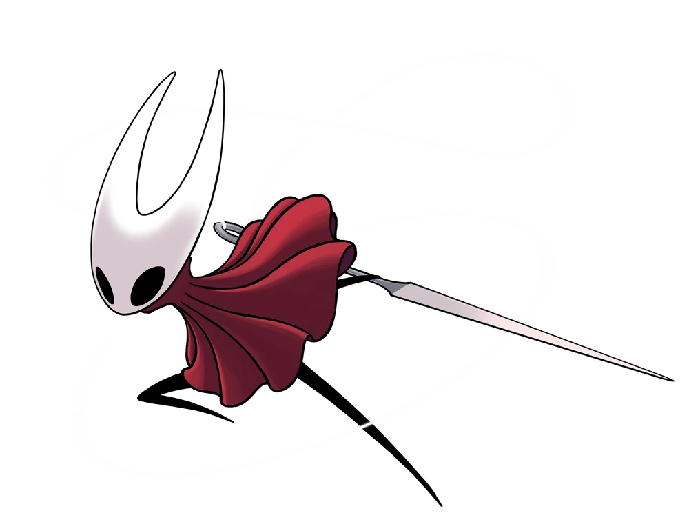
la protettrice di Nidosacro. Una spietata cacciatrice che usa ago e filo per abbattere ogni minaccia che possa liberare l'Infezione contenuta nell'Uovo Nero, dove risiede il Cavaliere Vacuo. Inizialmente si dimostra ostile verso il Cavaliere, ma ne diventerà un'alleata ed una guida nel percorso per adempiere al suo destino. Viene chiamata anche "la figlia di tre regine" perché nacque da Herrah, regina di Nidoscuro, ma fu allevata dalla Dama Bianca, regina di Nidosacro, e infine crebbe e venne addestrata al combattimento sotto Vespa, regina dell'Alveare e delle Api;
Il Cavaliere Vacuo: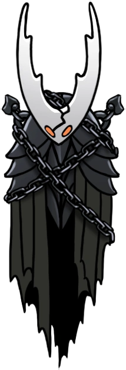
è un Ricettacolo pienamente sviluppato, figlio del Re Pallido e della Dama Bianca, creato "da Dio e dal Vuoto" per contenere al proprio interno l'Infezione. Vive incatenato nell'Uovo Nero, posto nel Tempio omonimo. Tuttavia l'amore assimilabile a quello paterno che il Re provava nei suoi confronti ne ha intaccato a sua insaputa l'integrità, facendo sì che il Cavaliere Vacuo, prima o poi, non potesse più contenere l'Infezione poiché non più completamente vuoto. All'apice del suo potere, era noto anche come il Ricettacolo Puro;
Lo Splendore:
un'antica divinità di luce, conosciuta come Radianza e progenitrice della tribù delle Falene, che governava i primevi insetti di Nidosacro. Con l'arrivo del Re Pallido, gli insetti hanno smesso gradualmente di venerarla e venne dimenticata; tuttavia, col tempo ha iniziato a manifestarsi nei sogni degli insetti i quali, resistendo, hanno portato all'Infezione. È il vero antagonista del gioco.
Personaggi ricorrenti:
Gerontias:
un insetto che vive a Pulveria ed il primo personaggio incontrato dal Cavaliere nel suo viaggio. È un insetto diffidente e timoroso che consiglia al protagonista di non avventurarsi nei meandri di Nidosacro se non vuole perire;
Zote il Potente:
un viandante arrogante e millantatore che crede e racconta di essere l'insetto più forte di Nidosacro. In realtà è molto debole, venendo salvato diverse volte dal Cavaliere ma prendendosi il merito per i mostri da lui sconfitti. Nel caso non venga salvato nelle occasioni in cui viene incontrato dal giocatore, morirà;
Cornifer:
Cornifer è un cartografo che si avventura nei meandri di Nidosacro per disegnarne una mappa, venendo puntualmente incontrato dal Cavaliere: è infatti lui che gli vende le cartine delle aree di Nidosacro;
Bretta:
uno scarabeo femmina che viene trovata persa e indifesa dal Cavaliere, innamorandosene e trasferendosi a Pulveria. Tende a figurare le persone di suo interesse come esseri superiori e perfetti. In seguito s'invaghisce di Zote quando anche questi si trasferisce a Pulveria, ma parte quando la sua immaginazione perisce sotto la realtà e capisce che Zote non è il cavaliere senza macchia né paura che credeva essere;
Sly:
una piccola mosca negoziante. La prima volta che lo si incontra è in un villaggio decrepito ed è quasi infetto, ma viene salvato in tempo e diventa un negoziante a Pulveria. Si scoprirà in seguito che in realtà è il Gran Maestro d'Aculeo, tutore di Oro, Mato e Sheo;
La Veggente:
ultima rimasta della tribù delle Falene che, trovato il Cavaliere, lo guida nel controllare i sogni e le Essenze che li compongono attraverso un antico talismano, l'Aculeo dei sogni. Al termine dell'allenamento del Cavaliere, trascende ad uno stato spiritico abbandonando il mondo materiale;
Grimm: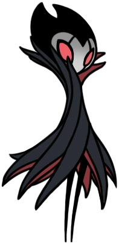
cordiale e bizzarro insetto errante, amante della musica e dello spettacolo, e capo della Compagnia di Grimm. Appare a Pulveria con la sua Compagnia dopo che il Cavaliere inizia un rituale, e sparendo alla sua conclusione. Nonostante sia un insetto, per il suo aspetto vampiresco presenta alcune caratteristiche da pipistrello. Viene aggiunto con l'espansione The Grimm Troupe;
La Cercatrice di Dei: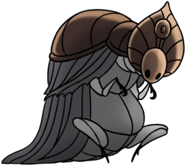
uno strano insetto avvolto di bende in cerca del Dio-re, raccogliendo per questo altri Dei in vari pantheon. Si trova tra i rifiuti delle Idrovie in un sarcofago, e attraverso di lei si può accedere alla Casa degli Dei. Viene aggiunta con l'espansione Godmaster;
La Dama Bianca: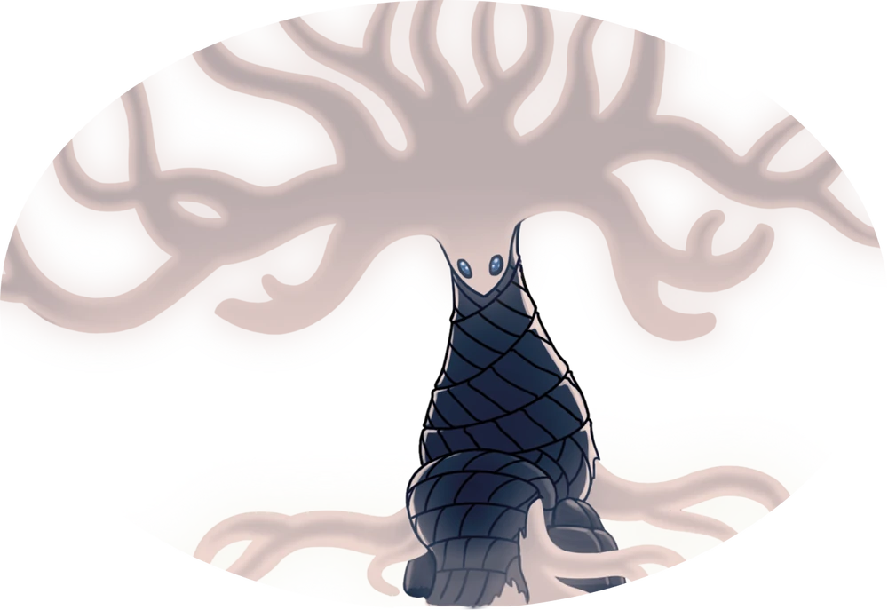
ex regina di Nidosacro e consorte del Re Bianco, che ora risiede nel Giardino a lei dedicato, ormai pieno di creature infettate. Si è rifugiata lontano dal mondo vergognandosi per l'orrore di aver contribuito a creare i Ricettacoli, immobilizzandosi per evitare di procreare ulteriormente;
Il Re Pallido: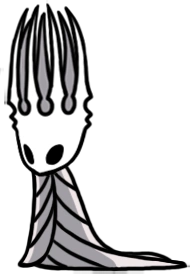
antico re di Nidosacro ed uno degli antichi Urovermi, descritto come un essere dalla mente geniale che, donando intelligenza agli insetti, fondò e fece fiorire Nidosacro al punto da essere lodato come un vero e proprio dio. Con l'arrivo dell'Infezione creò i Ricettacoli, usando tutti i mezzi possibili e commise terribili sacrifici per provare a salvare il suo regno e la sua gente, ma invano. L'ultima cosa che si sa di lui è che un giorno svanì nel nulla assieme alla sua reggia, il Palazzo Bianco;
I Sognatori: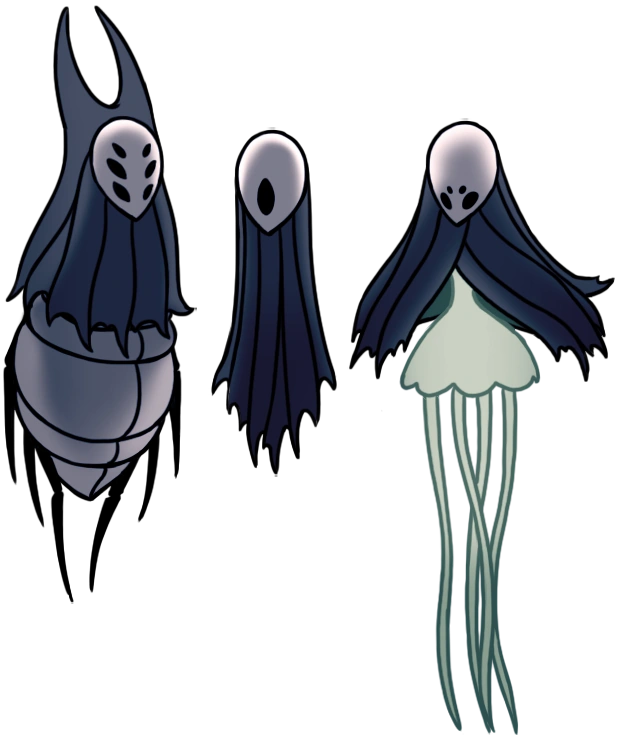
i tre fidi collaboratori del Re Pallido che hanno deciso di entrare in un sonno eterno per sigillare magicamente l'Uovo Nero e preservare Nidosacro. I tre Sognatori sono Monomon l'Erudita, una sapiente e scienziata, l'unica dei tre a ritenere che la stasi in cui venne posto Nidosacro non fosse la soluzione definitiva all'Infezione; Lurien il Guardiano, che sorvegliava la Città delle Lacrime; ed Herrah la Bestia, regina di Nidoscuro e madre di Hornet. Durante il suo viaggio a Nidosacro, il Cavaliere incontrerà e si alleerà anche con Quirrel, apprendista di Monomon inizialmente colpito da amnesia;
Il Vuoto:
un'entità primordiale, manifesta come densa melma nera e descritta come il nemico della luce, capace di corromperla. Per questo il Vuoto venne studiato e utilizzato dal Re Pallido per costruire i Ricettacoli, nel tentativo di salvare Nidosacro dall'Infezione;
Item e Armi:
Frammenti di maschera: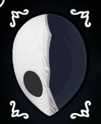
frammenti di un antica maschera, indossata come protezione. Ogni quattro si ottiene una vita extra;
Ricettacolo delle Anime: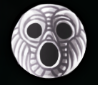
un ricettacolo completo, imbevuto di un potere che permette di contenere delle ANIME;
Sintonizzatore Divino: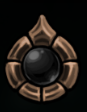
dispositivo che entra in risonanza con esseri di grande potere. Brilla intensamente quando sconfiggi potenti avversari;
Aculeo e Portale dei sogni:
l’aculeo permette a chi lo brandisce di squarciare il velo che separa il sogno e la veglia. Può essere utilizzato per rilevare sogni nascosti o passaggi aperti. L’Aculeo dei Sogni può raccogliere le Essenze, resti di sogni e desideri. Mentre il Portale dei Sogni permette all’araldo di viaggiare istantaneamente attraverso i sogni;
Concentrazione: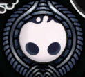
concentra le ANIME raccolte per riparare il tuo carapace e curare le ferite subite;
Anima d’Ombra:
evoca un’ombra che si lancia in avanti e brucia i nemici sul suo tragitto. L’ombra necessita di ANIME per essere evocata. Si evolve dalla spell “Vengeful Spirit”;
Tenebra Discendente:
colpisce il terreno con forza concentrata delle ANIME e dell’Ombra. Questa forza può distruggere i nemici o danneggiare le strutture fragili. La forza necessita di ANIME per essere evocata. Si evolve dalla spell “Desolate Dive”;
Grido dell’Abisso:
distrugge i nemici con le ANIME urlanti e l’Ombra. Gli Spettri necessitano di ANIME per essere evocati. Si evolve dalla spell “Howling Wraiths”;
Attacco Ciclone, Saetta e Potente:
l’attacco Ciclone, l’Arte dell’Aculeo caratteristica del Maestro d’Aculeo Mato. Un attacco rotante che colpisce rapidamente i nemici su tutti i lati; l’attacco Saetta, l’Arte dell’Aculeo caratteristica del Maestro d’Aculeo Oro. Attacca rapidamente dopo aver effettuato uno scatto in avanti; l’attacco Potente, l’Arte dell’Aculeo caratteristica del Maestro d’Aculeo Sheo. Scatena un attacco devastante proprio davanti a te, infliggendo danni aggiuntivi ai nemici;
Aculeo: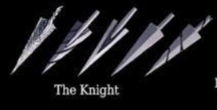
Aculeo è il termine usato per descrivere le armi impugnate da vari Nemici, PNG, Boss ma soprattutto dal Cavaliere. Il Forgiatore d'Aculei nella Città delle Lacrime può potenziare l'Aculeo del giocatore fino a 4 volte se viene consegnata la quantità di Minerale Terreo e Geo richiesta;
Mantello dell’Ombra:
un mantello tessuto con la sostanza dell’Abisso. Permette a chi lo indossa di scattare tra i nemici e i loro attacchi senza subire danni. Si evolve dal “Mothwing Cloak”;
Artiglio di Mantide:
artiglio intagliato nell’osso. Permette a chi lo possiede di aggrapparsi a un muro e saltare via;
Cuore di Cristallo:
il nucleo di energia di un vecchio golem delle miniere, che avvolge un potente cristallo. L’energia del cristallo può essere incanalata per lanciare in avanti chi lo indossa a folle velocità;
Ali del Monarca:
ali di materia eterea che brillano nell’oscurità. Permettono di saltare di nuovo a mezz’aria;
Lacrima di Isma:
un frutto formato da una singola lacrima solidificata. Una volta ingerito, dona protezione contro le pozze di acido ustionante presenti in alcune zone di Nidosacro;
Lanterna di Lumide:
lanterna di cristallo. Illumina le caverne buie affinché i viandanti possano trovare la strada;
Mappa e Piuma:
mappa di Nidosacro. Mentre riposi su una panchina o altrove, puoi usare la piuma per aggiornare la mappa con le nuove aree che hai scoperto;
Marchio del Re:
identifica chi lo indossa come re. I luoghi più antichi di Nidosacro si apriranno al suo passaggio;
Pass Tranviario:
un pass valido a vita per la tramvia che collega alcune zone di Nidosacro. Questi pass constavano molti Geo, e ogni acquisto richiedeva l’autorizzazione del Re.
Mappe:

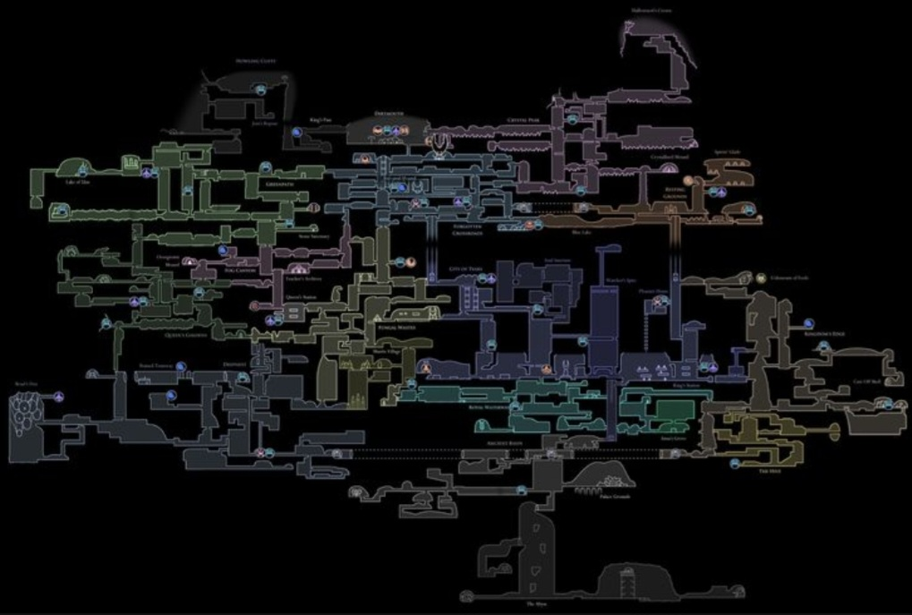
Zone segrete o extra:
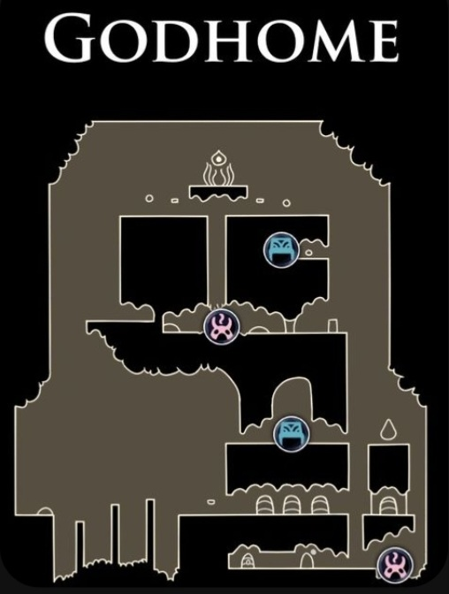